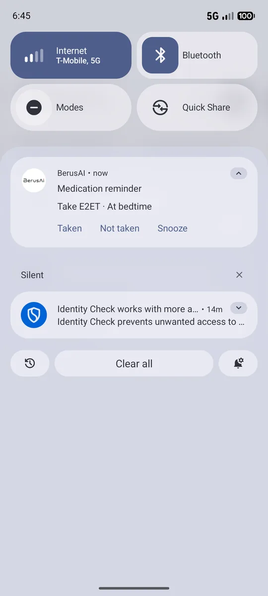
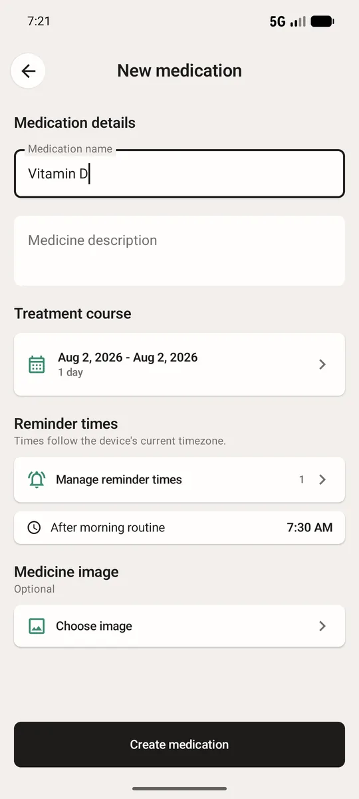
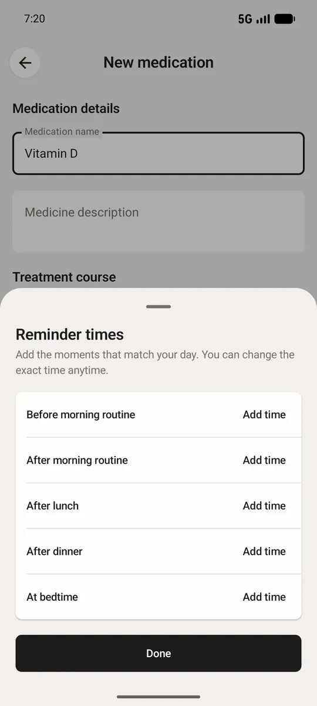
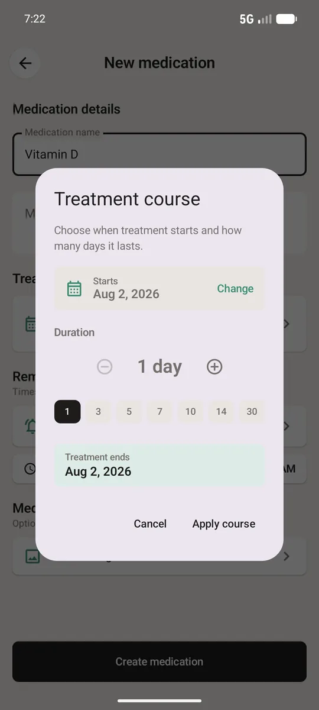
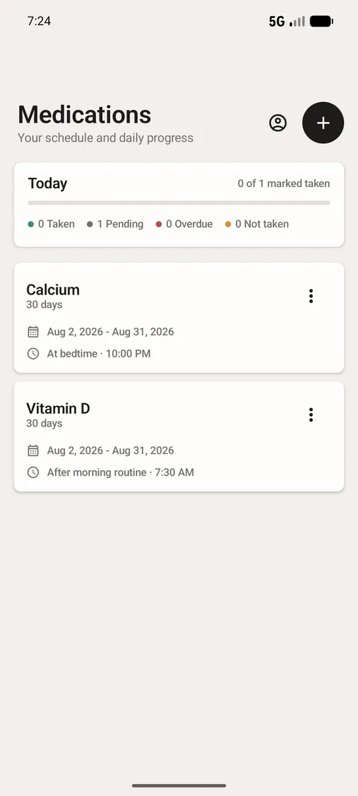
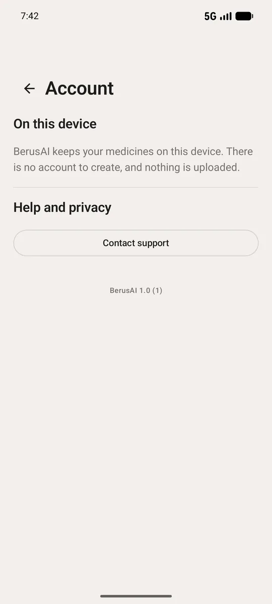

One reminder.
Not five.
Most medication apps buzz you again and again until you give in. BerusAI reminds you once, then waits quietly for your answer.
Free · 3.3 MB · no account needed · works offline. Coming to Google Play.

Why people uninstall reminder apps
It is almost never because the reminder failed. It is because the reminder would not stop.
What usually happens
- Reminder at 5:37
- Again at 5:52
- Again at 6:07
- Again at 6:22
- “You missed your dose” at 7:37
- You mute the app. Then you miss a real dose.
What BerusAI does
- Reminder at 5:37
- It stays on your screen
- You answer whenever you can
- A missed dose is saved quietly, never shouted about
- That is the whole thing
Built to be trusted, not loud
It waits for you
The reminder stays in your notification tray until you tap Taken or Not taken. Busy at dose time? It is still there an hour later.
It works offline
Reminders are scheduled on your phone. No signal, no data pack, aeroplane mode — they still arrive on time.
It stays on your device
Your medicines and history live on your phone. Cloud backup is optional and only runs if you sign in.
How it works
- Add your medicineName it, add a photo if you like, and set how many days the course runs.
- Pick your timesMorning, afternoon, night — before or after food. Sensible defaults are already filled in.
- Answer once a doseTap Taken or Not taken. Your history builds itself, so you always know where you stand.
A look inside





Where BerusAI is going
There is no AI in the app today, and we would rather tell you that than pretend. Right now it does one thing properly: it reminds you once, and remembers your answer. Here is what is being built next.
Spot the doses you miss
Your history already knows which dose you skip most. A future version will point it out in plain words, so you can fix the habit instead of guessing.
Times that fit your day
Reminders are on a fixed clock today. Later they will learn when you actually answer, and suggest a time you are more likely to keep.
A summary worth showing
A simple weekly view you can hand to a doctor or a family member, without them scrolling through your whole history.
None of this is in the app yet. When it arrives it will be optional, and your history will still live on your phone.
Get it on your phone
BerusAI is not on Google Play yet, so Android will ask you to confirm the install. That warning appears for every app installed outside the store — it is not a sign anything is wrong.
- Download the fileTap the button above on your phone. berusai-1.0.apk saves to your Downloads folder.
- Open it and allowAndroid will block it the first time. Tap Settings, switch on Allow from this source, then go back and tap Install.
- Say yes to two promptsAllow notifications and alarms & reminders. Without those two, Android will not let reminders reach you on time.
Android 7.0 or newer. No account, no sign-in, and nothing leaves your phone.
Questions
Is it free?
Yes. BerusAI is free to use, with no ads and nothing to unlock.
Do I need an account?
No. You can add medicines and get reminders without signing in. Signing in only adds optional cloud backup so you can restore on a new phone.
Will reminders work if I close the app?
Yes. Reminders are scheduled with the Android system, so they arrive whether the app is open, closed, or the phone was restarted.
What if I miss a dose?
The app quietly records it as missed so your history stays accurate. It will not send you an extra notification about it.
Why is it called BerusAI if there is no AI yet?
Because of where it is heading, not where it is today. The reminders you get now are plain scheduling, done carefully. The smarter parts described above are still being built, and we would rather be straight with you than claim something the app cannot do.
Is my health data private?
Your medicines and dose history are stored on your phone. Nothing is shared with advertisers, and nothing is sold. Cloud backup runs only if you choose to sign in.
Is it safe to install outside the Play Store?
The file is signed with our own certificate, so Android can confirm it has not been tampered with, and it is built in release mode so nobody can read your medication data off the phone. You are trusting us rather than Google's review, which is a fair thing to weigh. If you would rather wait for the Play Store version, email us and we will tell you when it is live.
When is it on the Play Store?
It is in final testing now. Email us and we will tell you the day it goes live.